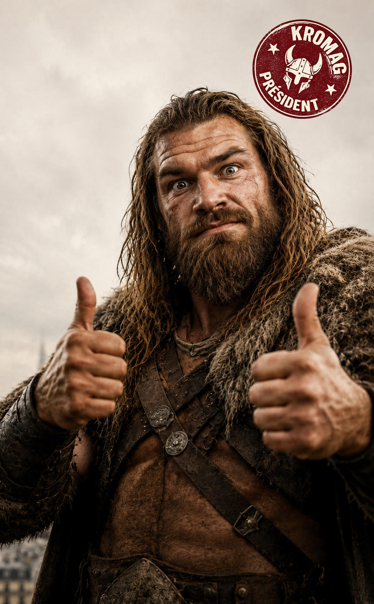
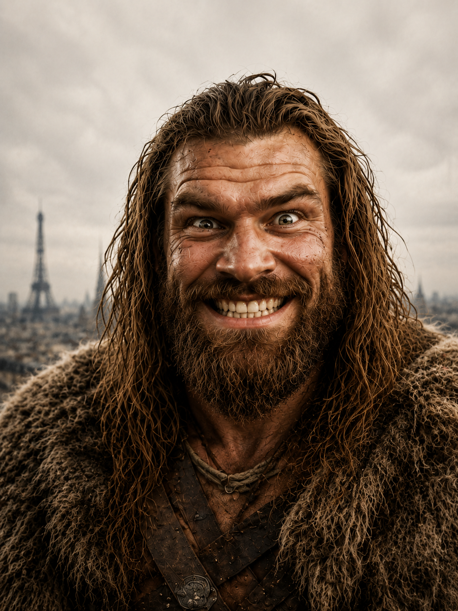

KROMAG
LE FENDEUR DE CRÂNES"Assez de palabres. Place aux baffes."
Françaises, Français, Horde de la nation ! Les autres candidats vous promettent la croissance, la baisse des impôts et de longs débats administratifs de lâches. Moi, Kromag, je promets l'acier, le retour des duels à mort constitutionnels et 100 mesures concrètes de violence thérapeutique nationale.
Tranche Net
Gras Banquet
Pas de Blabla

KROMAG LE FENDEUR DE CRANES
"Le seul candidat qui a un certificat officiel de terrassage d'ours brun."
L'Oracle du Grand Gourdin
Lisez le destin de la France écrit avec de la sueur et de la bière. Jeter la hachette sur l'oracle pour piocher une de nos 100 mesures barbares au hasard !
FRACASSE L'ORACLE SI TU ES UN GUERRIER !
Aucun fonctionnaire de Bercy n'a survécu à la rédaction de ce programme
Titre de la Mesure
...
...
...
...
Les 10 Sentiers de l'Acier
Explorez les 10 domaines de conquête administrative de Kromag pour rebâtir la France.
Le Grimoire Complet (100 Mesures)
100 mesures absolues pour éradiquer le blabla de notre société.

Kromag le Fendeur de Crânes
"Moins de paperasse, plus d'audace."
Candidat officiel du Parti du Grand Gourdin (PGG)
Le parcours d'une force de la nature
Égaré à notre époque suite à un orage chamanique mal négocié lors du pillage d'une abbaye de Normandie en l'an 900, Kromag a immédiatement compris le fléau de notre millénaire : la lenteur bureaucratique.
Choqué par la complexité de l'impôt sur le revenu, outré par l'inefficacité des anesthésies chimiques comparées à un bon coup de rondin, Kromag a fondé le Parti du Grand Gourdin (PGG) pour proposer aux citoyens de revenir aux fondamentaux de l'existence : l'hydromel, la force physique et les décisions prises à coups de poing.
"Les gens de ce siècle passent leur journée à appuyer sur des boutons magiques et à remplir des parchemins Cerfa. À mon époque, si tu voulais une maison, tu chassais les gobelins dedans et tu t'installais. C'est ça, la vraie simplification foncière."
Le Programme biophysique de l'instinct
Kromag ne croit pas aux modèles macroéconomiques compliqués de l'INSEE. Il ne connaît qu'un seul calcul : 'si tu as faim, mange un dindon; si ton voisin est trop riche, pille-le.'
Un vote pour Kromag en 2027 est la garantie d'avoir un chef d'État fort, capable de soulever une armoire normande à mains nues, et de terrifier les diplomates internationaux lors des banquets de l'Élysée en broyant sa chope avec les dents.
Rejoins la Horde !
Prête serment à Kromag et inscris-toi pour recevoir les ordres de combat pour la campagne 2027.